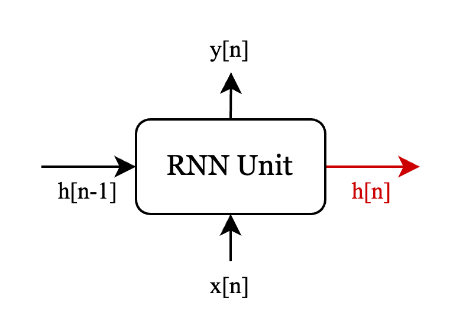
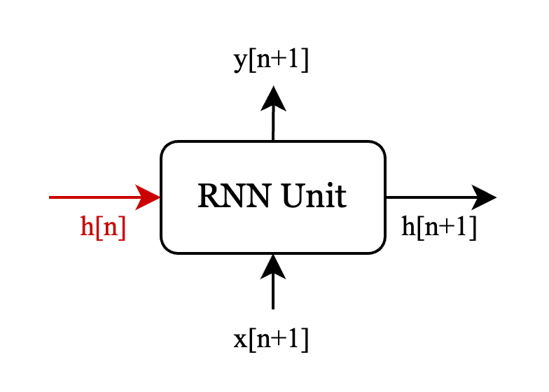

如何使用pytorch_lightning搭建RNN模型以及实现经典单块模拟
如果你想了解如何使用神经网络对单块、箱头等吉他周边进行模拟，Alec Wright的论文REAL-TIME BLACK-BOX MODELLING WITH RECURRENT NEURAL NETWORKS是一个很好的开始。首先，作者Alec没有使用很复杂的模型即完成了不错的模拟。其次，作者开源了相应的模型代码Automated-GuitarAmpModelling，其中包含完整的训练流程以及数据集，极大地降低了学习成本。
本文可以看作是对论文以及对应项目的学习笔记，因此文中会大量借鉴论文中的想法和项目中的实现。除此之外，本文会尝试将原项目移植到Pytorch Lightning框架中。运用Pytorch Lightning的特性，可为计算资源的调用提供灵活性以及减少重复造轮子的成本。
什么是循环神经网络（RNN）
不同于前馈神经网络（比如卷积神经网络），循环神经网络的输入部分，除了当前的数据内容，还需要输入之前的状态信息。也就是说，循环神经网络每一次处理数据时，会生成当前状态信息，以供下一次处理数据时使用。下面是一个RNN单元的示例：

可以看到，一个RNN单元接收两个输入，x[n]为当前的数据，h[n-1]为上一次状态信息。其处理后产生的两个输出，y[n]作为输出结果，h[n]作为当前状态信息，给下一次处理使用。h被称为hidden state。
接着，当该RNN单元处理x[n+1]时有以下流程（注意关联上下两图的红色部分）：

至于RNN单元内部做了哪些处理，不同的RNN类型有各自的做法。常见的RNN层有LSTM(Long Short-Term Memory)以及GRU(Gated Recurrent Unit)。下面简单介绍一下GRU的流程。
GRU
可以看到，GRU直接使用h[n]作为结果输出以及状态信息。h[n]的生成遵循下面的公式：
\(z[n] = \sigma(W_z x[n] + U_z h[n-1])\)
\(r[n] = \sigma(W_r x[n] + U_r h[n-1])\)
\(\tilde{h}[n] = tanh(W_h x[n] + U_h (r[n] \ast h[n-1]))\)
\(h[n] = (1 - z[n]) \ast \tilde{h}[n] + z[n] \ast h[n-1]\)
其中，W和U为需要训练的权重。z为update gate，r为reset gate。
神经元的规模受输入数据的尺寸和hidden size的影响。hidden size还用于指定hidden state的规模。
关于GRU的更多细节，这里不再赘述。
模型以及训练方法
模型介绍
论文中使用的模型十分简明，如下所示：
可以看到，模型包含两层，先是GRU，再是一个全连接层。
不考虑batch的情况下，数据维度为(seq_len, 1)，其中seq_len为序列长度。也就是说，我们所处理的数字音频信号，其采样点个数即为seq_len。
于是，我们很容易实现模型的初始化和forward部分。
from torch import nn
class RNNModel(nn.Module):
def __init__(self):
super().__init__()
self.input_size = 1
self.output_size = 1
self.hidden_size = 8
self.rec = nn.GRU(
input_size = self.input_size,
hidden_size = self.hidden_size,
)
self.lin = nn.Linear(self.hidden_size, self.output_size)
self.hidden = None
return
def forward(self, x):
x, self.hidden = self.rec(x, self.hidden)
return self.lin(x)如何训练
在阐述RNN的训练流程之前，我们先来看前馈神经网络的训练流程，然后说明其训练为何不能直接套用到RNN上。
我们以经典的MNIST图像识别为例，该数据集为上万张黑白图片，尺寸为28x28，每张图片为手写的阿拉伯数字0-9。
模型输入的最小单位是一个28x28的矩阵，模型输出尺寸为10的向量。不考虑batch的情况下，每处理一张图片做一次反向传播。
我们再来看当前场景的RNN模型，其输入的最小单位是一个采样点，即一个值，模型随后输出另一个值。可以想象，若每处理一个采样点就做一次反向传播是不可取的。第一，带来巨大的计算开销；第二，在一般的RNN模型中，一个采样点不仅要参与到对下一个time step的预测，还需要参与多个time step之后的某个值的预测，因此只通过后一个time step的信息来进行学习是无法完成这类任务的。
因此，在RNN的训练中，有一个名为Back-Propagation Through Time(BPTT)的基本概念，其意思为每处理一段完整的序列，才做一次反向传播。但是，这里又会引入一个新的问题，为了达到较好的预测效果，完整的序列通常不会很短，这就会导致反向传播构造出的计算图非常大，由此带来计算开销的问题。为了解决这个问题，我们使用BPTT的一个改进: Truncated Back-Propagation Through Time。
Truncated Back-Propagation Through Time
该方法的思路很简单，相比于BPTT中一段完整的序列做一次反向传播，该方法则将完整的序列拆分为连续的子序列，一段子序列做一次反向传播。
但是，该方法不改动子序列之间的关联性，即每个子序列的hidden state不进行重置，而是继承上一次子序列输出的hidden state。
此外，为了避免重复计算梯度，每个子序列处理之后，hidden state需要做detach。
下面通过代码展示该流程，代码来自对Automated-GuitarAmpModelling中相关部分的改写。为了方便阐述，代码做了一定简化。
# 基于前述的RNNModel，增加以下成员函数detach_hidden(...), reset_hidden(...)
class RNNModel(nn.Module):
# ...
def detach_hidden(self):
self.hidden = self.hidden.clone().detach()
def reset_hidden(self):
self.hidden = None
# 下面是RNNModel的训练流程，部分参数含义：
# - EPOCH_NUM: epoch的次数
# - train_dataset: 数据集，由batch组成的list
# - 其中，batch的形式为(输入数据, 标签数据)。输入和标签数据的形式为(序列长度, batch大小，采样点的维度)
# - SEG_LEN: 子序列的长度
# - loss_func: 损失函数
# - optimizer: 优化器
model = RNNModel()
for epoch in range(EPOCH_NUM):
# ...
for batch in train_dataset:
x, y = batch # 得到输入数据和标签数据
seg_start_i = 0 # 子序列的起点
for k in range(math.ceil(x.shape[0] / SEG_LEN)):
seg_end_i = seg_start_i + SEG_LEN # 子序列的终点
logits = model(x[seg_start_i:seg_end_i, :, :]) # 从输入数据中获取子序列，输入模型做forward
# 做误差计算和反向传播
loss = loss_func(logits, y[seg_start_i:seg_end_i, :, :])
loss.backward()
optimizer.step()
model.zero_grad()
# 将模型的hidden state进行detach，防止后续梯度重复计算
model.detach_hidden()
# 起点指向下一个子序列开头
seg_start_i += SEG_LEN
# 完整序列处理完毕，重置hidden state
model.reset_hidden()损失函数链
对于数字信号的误差计算，一般会用到ESR(Error-to-Signal Ratio)。在此基础上为了得到更好的训练效果，还会有高频补偿的预处理以及直流修正等损失函数的参与。
高频补偿形式的ESR
面对音频相关模型的训练时，许多论文都会指出模型对于高频部分的训练效果不佳。一个常见的解决方法就是在ESR之前对输出数据和标签数据做高通滤波。
该论文在损失函数介绍部分（4.1. LossFunction）中，提及的”pre-emphasis filter”即是此意。这是一个一阶高通滤波器，形式如下：
经过滤波后的数据再经过ESR得到误差结果，下面是ESR的公式：
其中，\(y_p[n]\)为标签数据，\(\hat{y}_p[n]\)为模型输出数据。
可以看到，分子部分通过比较输出数据和标签数据每个time step的差值得到误差能量并求和。而分母部分为标签数据对应的能量，这是一种让能量归一化的做法，保证能量不同的片段在损失函数中被同等对待。
直流修正
引入直流修正的原因在于论文作者发现模型训练出来的结果会产生额外的直流分量。因此，作者在论文中介绍了一个DC Loss损失函数，如下所示：
这个公式和ESR的区别在于，ESR是对每个time step求差值的能量再求和。DC Loss则是对序列的所有的time step得出的平均差值再求能量。也就是说，DC Loss认为，数据的直流特征可以通过整段数据的平均值进行表达。
损失函数的协调
在计算误差时，多个损失函数结果会进行加权求和作为最终的误差。
利用Pytorch Lightning训练RNN
我们知道，即使是不同的模型，其数据集的处理和整个训练流程都包含许多通用的步骤，比如反向传播的流程、运算资源的指定、日志的收集等。这些步骤有的繁琐，有的对执行顺序有严格的要求。如果每次遇见新的模型都要自己操手这些流程，会极大地影响实现的效率，并且维护起来也十分不便。
Pytorch Lightning即为解决这个问题而生。这个框架会接手大部分通用的流程，比如，训练过程中不用关心数据和模型是否在对应的device上，lightning会依据配置完成关联；对于模型在train状态还是eval状态，由lightning负责；梯度计算、反向传播、梯度重置的工作，默认由lightning负责。
下面以一个简单的前馈神经网络为例：
import pytorch_lightning as pl
class Model(pl.LightningModule):
def __init__(self):
super().__init__()
self.l1 = nn.Linear(100, 64)
self.l2 = nn.Linear(64, 10)
def forward(self, x):
h1 = nn.functional.relu(self.l1(x))
return nn.functional.relu(self.l2(h1))
# 配置optimizer
def configure_optimizers(self):
optimizer = optim.SGD(self.parameters(), lr=1e-2)
return optimizer
def training_step(self, batch, batch_idx):
x, y = batch
logits = self(x) # forward
J = nn.CrossEntropyLoss(logits, y) # 算误差
return J
# 配置数据集
def train_dataloader(self):
# ...
model = Model()
trainer = pl.Trainer(max_epochs=1000, accelerator="gpu", devices=1)
trainer.fit(model)可以看到，我们只需要在training_step(…)中完成forward流程和损失函数调用部分，其他部分由lightning接管即可。
当然，lightning的默认流程并不能涵盖所有的场景，因此lightning也通过丰富的hook来给模型训练流程的定制提供足够的灵活性。
例如前面提及的Truncated Back-Propagation Through Time方法是lightning的默认流程无法满足的，我们需要自己接管子序列的反向传播流程。
下面，我们尝试将上述的RNNModel代码改写为lightning形式，如下：
import pytorch_lightning as pl
class RNNModel(pl.LightningModule):
def __init__(self):
# ...
self.up_fr = up_fr
self.automatic_optimization = False
def configure_optimizers(self):
optimizer = torch.optim.Adam(self.parameters(), lr=0.005, weight_decay=1e-4)
return optimizer
def training_step(self, batch, batch_idx):
x, y = batch
opt = self.optimizers() # 获得优化器
seg_start_i = 0
for k in range(math.ceil(x.shape[0] / self.up_fr)):
seg_end_i = seg_start_i + self.up_fr
logits = self(x[seg_start_i:seg_end_i, :, :])
loss = self.loss_func(logits, y[seg_start_i:seg_end_i, :, :]) # 上文提及的损失函数链
# self.automatic_optimization为False时，lightning不会自动执行backward、step和zero_grad这三个流程。我们自行调用，即下面三行。
self.manual_backward(loss)
opt.step()
opt.zero_grad()
self.detach_hidden()
seg_start_i += self.up_fr
self.reset_hidden()RNNModel原先继承nn.Module改为pl.LightningModule。由于pl.LightningModule完全包含nn.Module的功能，可完全替代之。
然后，之前对RNNModel的训练流程在这里的training_step(…)中体现。在该函数中，我们自行决定对backward、step和zero_grad的执行，而不希望lightning参与。为了实现这一点，需要对self.automatic_optimization进行设置。
self.automatic_optimization默认为True，此时lightning会根据training_step(…)返回的误差自动进行backward、step和zero_grad。而这里我们设置为False，即我们自己接管这三个流程的执行。
此外，需要注意上述的数据形式为（序列长度, batch大小，采样点的维度），这保证与nn.GRU的默认输入数据要求一致。若原数据形式为（batch大小，序列长度，采样点的维度），在forward前可通过以下操作调整形式：
class RNNModel(pl.LightningModule):
# ...
def training_step(self, batch, batch_idx):
x, y = batch
x = x.movedim(0, 1)
y = y.movedim(0, 1)训练结果
训练数据方面，我们使用Automated-GuitarAmpModelling项目提供的数据集，并使用其中的ht1设备的数据。ht1即黑星HT-1电子管。
模型参数方面，我们使用hidden size为32的GRU进行训练。训练中，epochs设为500次，我们取其中validation loss最低的模型参数作为最终参数。
经过多轮训练，我们的模型的ESR结果大约在2.5%左右，和论文中的3.3%在同一数量级。
以下我们摘取标签数据和实际模型输出数据的片段进行对比：
可以听到，经过训练后模型学习到了大部分的风味，不过仍然有一些细节是缺失的，尤其是高频部分。为了得到更接近的结果，可能需要引入更复杂的模型，这是之后的一个探索方向。